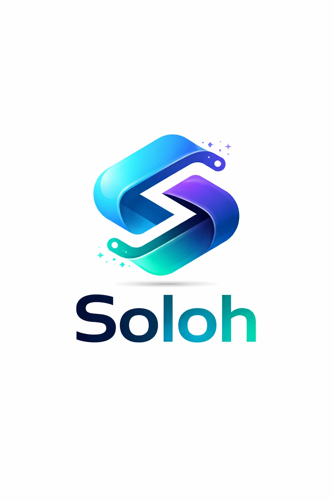

Web Developer
📞 +254 791 665 367
📧 lemeteisolonka@gmail.com
📍 Nairobi, Kenya
Diploma in IT
Starehe Technical Training Institute
2026
Creative and passionate web developer with experience in building modern and responsive websites using HTML, CSS, and JavaScript. Skilled in designing user-friendly interfaces and developing functional web applications.
2026 - Present
Developed responsive websites and web applications. Improved UI design and optimized performance.
2026
Assisted in building company websites and managing GitHub repositories.
Savannah Motors Kenya
A motors company is a business that specializes in the sale, distribution, maintenance, and servicing of motor vehicles and related automotive products. The company provides a wide range of vehicles such as cars, trucks, and commercial vehicles, while also offering services like vehicle repairs, spare parts supply, and customer support. With a commitment to quality, reliability, and customer satisfaction, the company aims to deliver efficient transportation solutions that meet the needs of individuals, businesses, and organizations. Through professional expertise and modern automotive technology, the motors company strives to ensure safety, performance, and long-term value for its customers.
Ecocycle Solutions
EcoCycle Solutions is an environmentally focused company dedicated to sustainable waste management, recycling, and resource recovery. The company works to reduce environmental pollution by collecting, sorting, and processing waste materials into reusable or recyclable products. Through innovative technologies and eco-friendly practices, EcoCycle Solutions promotes a circular economy where waste is transformed into valuable resources. The company also partners with communities, businesses, and organizations to promote environmental awareness, responsible waste disposal, and long-term sustainability.